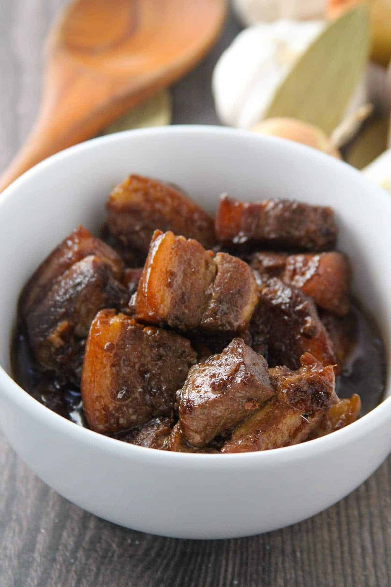

Pork Adobo

Description
Pork Adobo has perhaps the best claim to be called the national dish of the Phillipines. There are many different variations, but the best know is the version described here
It consists of pork belly, soy sauce, vinegar and garlic. Ofcourse served alongside white rice and more vinegar!
Ingredients
- Pork Belly, skin removed
- Soy sauce
- Garlic
- Bay Leaves
- Peppercorns
- Vinegar
- Salt, to taste
Recipe
- Marinate pork belly in soy sauce and crushed garlic, overnight
- Brown the marinated pork, save marinade for later!
- Once browned, return marinade, spices and cover with water
- Boil gently for 2 hours, or until pork is tender and falling apart
- Take scum that forms from the top of the sauce and discard
- Add vinegar for last 10 or so minutes of cooking
- Serve alongside white rice, and more vinegar